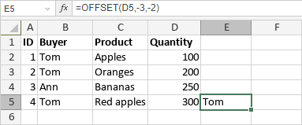

OFFSET funkcija
OFFSET funkcija je jedna od funkcija za pretragu i reference. Koristi se da vrati referencu na ćeliju koja je pomerena u odnosu na zadatu ćeliju (ili gornje-levu ćeliju u opsegu ćelija) za određeni broj redova i kolona.
Sintaksa
OFFSET(reference, rows, cols, [height], [width])
OFFSET funkcija ima sledeće argumente:
| Argument | Opis |
|---|---|
| reference | Referenca na početnu ćeliju ili opseg ćelija. |
| rows | Broj redova gore ili dole, na koje želite da gornje-leva ćelija u vraćenoj referenci pokazuje. Pozitivne vrednosti pomeraju rezultat ispod početne ćelije, negativne iznad. |
| cols | Broj kolona levo ili desno, na koje želite da gornje-leva ćelija u vraćenoj referenci pokazuje. Pozitivne vrednosti pomeraju rezultat desno od početne ćelije, negativne levo. |
| height | Broj redova u vraćenoj referenci. Vrednost mora biti pozitivna. Opcioni argument. Ako se izostavi, funkcija pretpostavlja da je jednaka visini početnog opsega. |
| width | Broj kolona u vraćenoj referenci. Vrednost mora biti pozitivna. Opcioni argument. Ako se izostavi, funkcija pretpostavlja da je jednaka širini početnog opsega. |
Napomene
Napomena: ovo je formula niza. Da biste saznali više, pročitajte članak Umetanje formula niza.
Kako primeniti OFFSET funkciju.
Primeri
Na slici ispod prikazan je rezultat koji vraća OFFSET funkcija.
